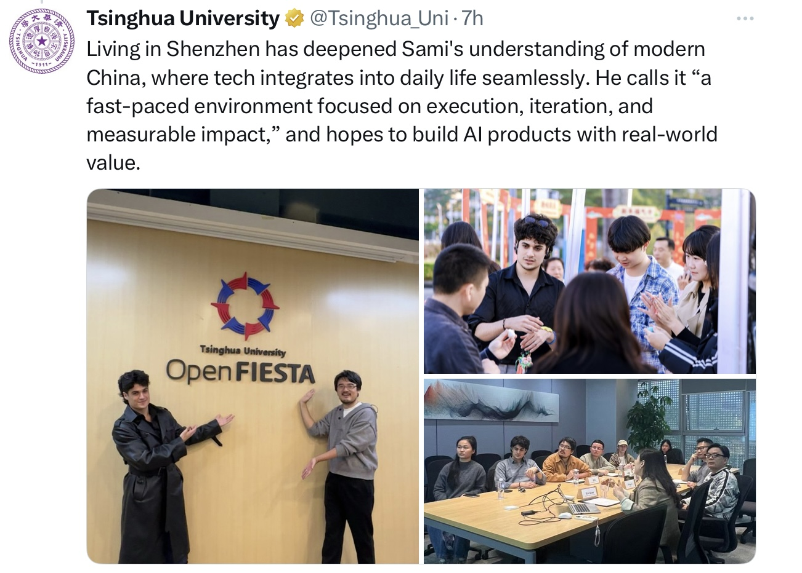
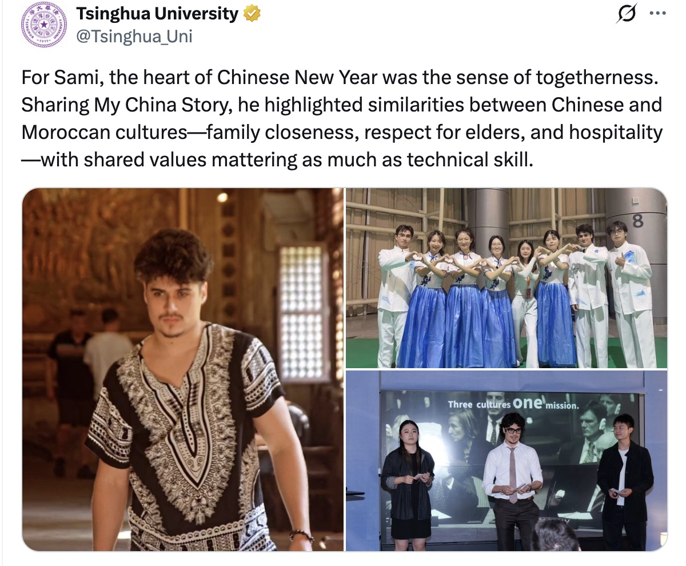

سؤال · من نشر عني رسمياً؟
جامعة تسينغهوا الرسمية.
تم اختياري ضمن سلسلة #MyChinaStory + #TsinghuaRen الرسمية من جامعة تسينغهوا. نُشر على @tsinghua.sigsadm وعلى الحساب الرسمي للجامعة @Tsinghua_Uni · فبراير 2026.
"من خلال دراساته وعمله في مشاريع الذكاء الاصطناعي، بما في ذلك مشاركته في منظومة بايدو ERNIE، اكتسب رؤية مباشرة لما يصفه بـ 'بيئة تقنية سريعة الإيقاع، تركز على التنفيذ، والتكرار السريع، والتأثير الواقعي.'"


كما نُشر أيضاً
@Tsinghua_Uni · الحساب الرسمي الموثق.
ليس فقط SIGS — تم اختياري على الحساب الرئيسي الموثق لجامعة تسينغهوا على Twitter.

